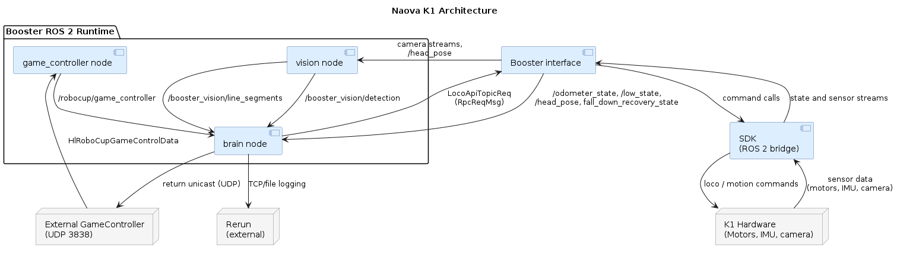

Core Concepts#
This page introduces the fundamental ideas behind the Naova K1 software stack.
The Naova K1 codebase is based on Booster Robotics’ robocup_demo project.
The Four Functional Layers#
The software is organized into four layers.
Layer |
Node |
Responsibility |
|---|---|---|
Perception |
Vision Node |
Detect objects in camera images; publish positions in robot frame |
Decision |
Brain Node |
Maintain world model; run behavior tree; publish motion commands |
Referee interface |
Game Controller Node |
Parse UDP game state packets; republish as ROS 2 messages |
Hardware abstraction |
Booster SDK Interface |
Translate motion commands to hardware API; bridge hardware telemetry to ROS 2 |
Component Diagram#

Core Libraries#
ROS 2 Humble: middleware framework
BehaviorTree.CPP: decision-making framework
OpenCV: image processing
ONNX Runtime (optional): neural network inference for no-CUDA builds
CUDA Toolkit (optional): GPU acceleration for vision builds
TensorRT (optional): neural network inference for GPU vision builds
Perception–Decision–Action Loop#
The robot operates as a continuous closed-loop system. Every cycle, three things happen in sequence:
Perceive — sensors produce data (camera frames, depth images, joint angles, IMU readings, game state from the referee).
Decide — the brain integrates that data into a world model and evaluates a behavior tree to select an action.
Act — the selected action is sent as a command to the hardware, which executes it and immediately produces new sensor data.
ROS 2 and the Publish–Subscribe Model#
The main perception/decision stack is implemented as a ROS 2 application. ROS 2 provides a publish–subscribe middleware that lets independent processes (called nodes) communicate without direct coupling.
Key terms:
Node: An executable process with a specific role (e.g., Vision Node, Brain Node).
Topic: A named channel over which messages flow (e.g.,
/booster_soccer/detection).Publisher: A node that writes messages to a topic.
Subscriber: A node that reads messages from a topic.
Message type: The schema of the data exchanged (e.g.,
vision_interface/msg/Detections).QoS (Quality of Service): Policies that control reliability, history, and durability of message delivery.
Because nodes in this stack communicate primarily through topics, each node can be developed, tested, and replaced with lower coupling. In many cases, adding a new algorithm means writing a new node that subscribes to existing topics and publishes on new ones.
World Model#
In NaovaCodeK1, the world model is primarily the runtime state stored in BrainData and updated by sensor/game callbacks plus per-tick memory updates.
Ball state: current best ball detection (position, confidence, timestamp),
ballDetected, plus teammate-shared ball fallback (tmBall).Robot pose state:
robotPoseToOdom,odomToField, androbotPoseToFieldtransforms; field pose is propagated from odometry and calibrated by dedicated localization behaviors.Perception memory: latest detections for goalposts, field markings, field lines, robots/opponents, and vision box geometry; robots/obstacles and ball knowledge also use timeout-based memory management
Game/referee state: decoded primary/secondary game states, kickoff-side flags, per-player penalty arrays, live player counts, and score.
Team communication state: teammate liveness, role/cost metadata, and shared ball/pose reports used for cooperation.
Behavior Trees#
Framework
NaovaCodeK1 uses BehaviorTree.CPP as the primary high-level decision framework in the brain. The behavior tree is evaluated via periodic ticks from the root, with BT nodes (distinct from ROS 2 nodes) composing logic hierarchically.
Additional Resources#
ROS 2 Documentation: https://docs.ros.org/en/humble/
ROS 2 Beginner Tutorial (Turtlesim): https://docs.ros.org/en/humble/Tutorials/Beginner-CLI-Tools/Introducing-Turtlesim/Introducing-Turtlesim.html
BehaviorTree.CPP: https://www.behaviortree.dev/
RoboCup SPL: https://spl.robocup.org/
YOLOv8: https://docs.ultralytics.com/